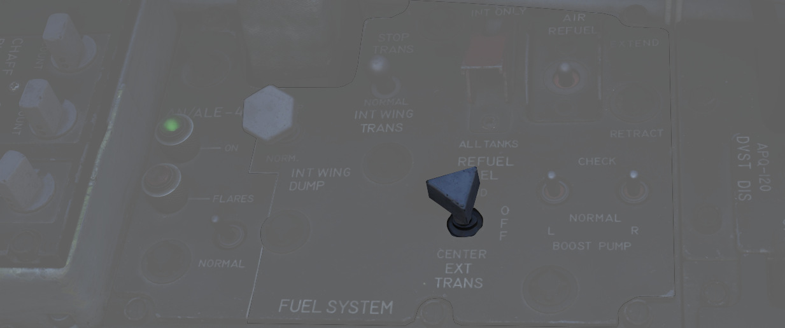
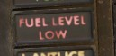

Fuel System
The Phantom's fuel system is duplicated; that is, their pump and feed arrangement is the same for both the left and right engines, and they share the same set of fuel cells. Internal fuselage fuel between all 7 cells and the wing tanks is just over 12,000 lbs of JP-4. With two external 315 gallon wing tanks, that value increases to over 16,800 lbs. Adding the centerline 600 gallon tank will bring the aircraft total fuel state to just under 20,800 lbs of fuel.
Transfer Sequence

The F-4 carries two internal wing tanks, along with seven fuel cells down the length of the fuselage, with cell 1 resting just behind the aft cockpit, and the remaining cells numbered in order to the rear of the aircraft. Cell 1 is the feed cell for the engines; cells 4 and 6 each carry a hydraulic and an electric transfer pump to supply fuel to cells 1 and 2. The remaining fuselage cells perform a gravity feed into cells 1, 4, or 6. Cell 3 feeds cell 4 and 5, cell 2 feeds cell 1 and cell 7 feeds cell 6. With this arrangement, center of gravity balance is maintained along the centerline. Cell 7 is the last cell to initiate transfer in the sequence, and does not begin until the total fuel in cells 1 and 2 fall below 1800 lbs.
Fuel transfer from the wing and external tanks is performed by bleed air pressurization once airborne; they will not transfer until the aircraft is off the ground. Internal wing tank fuel is transferred into fuselage cells 1 and 3, whereas fuel from external tanks are balanced between cells 1, 3, and 5.
Internal Wing Transfer Switch

Should it be necessary, a two position switch is available to turn off transfer from the wing internal tanks. Found on the Fuel Control Panel, the Internal Wing Transfer Switch can be toggled between NORMAL and STOP TRANS.
External Transfer Switch

External tank transfer is controlled by the External Transfer Switch; found on the Fuel Control Panel, the switch has three positions: CENTER, OFF, and OUTBD (Outboard), with OUTBD referring to the wing external tanks.
It is not possible to transfer from the wing tanks and external tanks at the same time. If both are selected, the external tanks will take priority.
Fuel Boost System

Flow from Cell 1 to the engines is performed by a pair of boost pumps. The pumps are installed at the bottom of the tank to provide fuel in the event of a negative G excursion. The function of these pumps can be confirmed on the Fuel Boost Pump Pressure Indicators found in the front cockpit. Engine idle pump flow rate is 30 PSI, ±5 pounds. To confirm a ground check, a pair of Boost Pump Check switches are found on the fuel control panel. Holding one of these switches in the CHECK position will perform an engine shutdown, and provide feedback on the respective Pressure Indicator.
Fuel Quantity Indication System
Fuel Level Low Warning Light

When the sensor in Cell 2 detects a fuel weight of less than 1650 ±200 lbs, the FUEL LEVEL LOW warning will illuminate on the front cockpit telelight panel. This illumination is independent of the Fuel Quantity Indication System, and can be indicative of a transfer failure.
External Tanks Fuel Lights

Any time an external fuel tank is detected to not be flowing fuel into the fuselage, a respective light will illuminate on the telelight panel - L EXT FUEL, CTR EXT FUEL, or R EXT FUEL. These lights will only illuminate for the respective external transfer - that is, if OUTBD is selected, CTR EXT FUEL cannot illuminate, and vice versa. Because transfer can occur intermittently due to flow from the tanks exceeding engine fuel consumption, the warning lamp is not immediately indicative of an empty external tank, and should be checked against the quantity indication system. Further, the lamps will illuminate when the air refuel switch is set to EXTEND, with the ALL TANKS setting selected.
💡 To confirm that the tanks are empty fly calm and level and watch if the light stays on and the fuel gauge is not going up for at least one or two minutes.
When air-to-air refueling, or when refueling on the ground and the tanks have reached a full condition, the External Tanks Full lamps, found under the canopy bow, will light.
Fuel Dump System

Fuel from the wings can be dumped directly, rather than requiring transfer into the fuselage, using the Wing Fuel Dump Switch.

This switch, when selected to DUMP, will release fuel from the internal wing tanks at their dump lines at the wing fold trailing edge. Flow rate is dependent on power setting and attitude, higher engine RPM and positive pitch increases dump speed, whereas lower RPM and a nose low condition reduces dump speed.
💡 In level flight at 85% RPM, the dump flow rate is roughly 650 pounds per minute. Leading to the entire fuel being dumped after roughly 15 minutes.
Fuel Venting System
To prevent issues with overpressure, the aircraft provides a venting system.
Should an overpressure condition occur, tanks will vent fuel until the pressure is corrected.
The process is fully automated. External tanks vent into the internal wing tanks and all other cells are connected to the vent mast below the rudder.
💡 Under normal conditions, overpressure only occurs momentarily whenever the internal wing fuel tanks are pressurized and made ready for transfer. This is the case whenever the gear is retracted or the AAR door is closed.